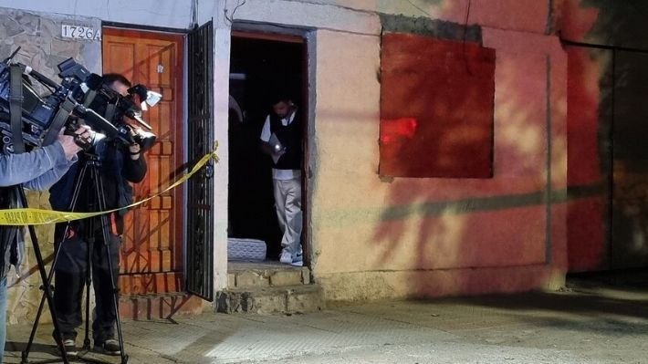

Hombre es asesinado a balazos en Santiago: Arrendaba piezas de manera informal y se investiga posible ajuste de cuentas
Autor: Daniel Andrade
Fecha y Ubicación: 14 de Enero de 2024, Chile
Categoría: Ultimo minuto
La víctima tenía 54 años y no contaba con antecedentes policiales. Se desconoce la identidad de los dos agresores.
Un hombre de 54 años murió durante la noche del sábado de un balazo en la cabeza tras ser atacado en su domicilio de la comuna de Santiago. La víctima es de nacionalidad chilena y arrendaba piezas de manera informal. No se descarta un ajuste de cuentas como motivo de la agresión.
Los hechos ocurrieron alrededor de las 22:15 horas, cuando dos sujetos en un vehículo llegaron hasta la vivienda del afectado, golpean insistentemente a la puerta y disparan hacia el interior, impactando en diversas partes del cuerpo. Al respecto, el fiscal Mauricio Gonzalez indicó que "la herida más complicada que le provocó el deceso fue de un balazo en la cabeza". Añadió que la víctima no tenía antecedentes, sin embargo, no descartan presunto ajuste de cuentas. Por su parte, el comisario de la Brigada de Homicidios Centro Norte de la PDI, señaló que "se pudo establecer, en primera instancia, que la víctima se encontraba en el interior del inmueble cuando es abordado por dos sujetos, quienes previamente descendieron de un vehículo, realizando reiterados disparos hacia el interior de este, provocando que la víctima fallezca en el lugar, mientras que los sujetos huyen en dirección desconocida". Además, informó que en el lugar hay "diversa evidencia balística" y que "la víctima arrendaba más piezas a más personas". Por instrucciones de la Fiscalía Metropolitana Centro Norte, el crimen quedó a cargo de la Brigada de Homicidios de la PDI.